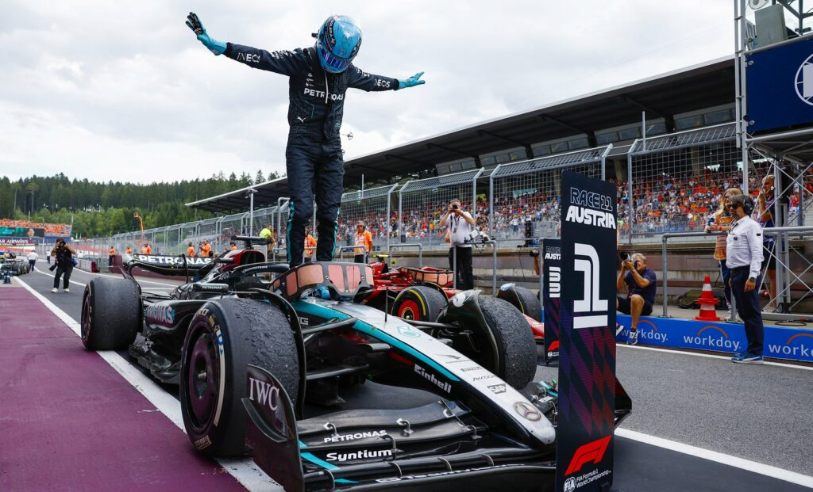
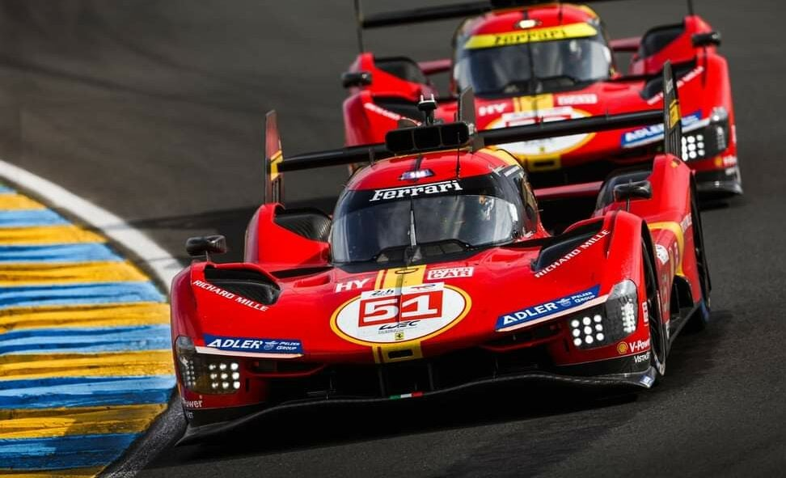

CORRIDAS
.jpg)
Existem milhares de corridas espalhadas por circuitos do mundo todo. O principal
objetivo do piloto é chegar em primeiro, garantindo assim a vitória. Grandes marcas já
mencionadas no site como Ferrari, McLaren e Porsche possuem sua divisão de corridas.
Abaixo iremos citar algumas dessas corridas, mas antes vamos apresentar na
tabela alguns circuitos que existem pelo mundo.
| Circuito |
Local |
Extensão |
Melhor tempo |
| Mônaco |
Monte Carlo |
3.33km |
Hamilton: 1m12s909 |
| Nüburgring |
Alemanha |
22km |
Timo Bernhard: 5m19s55 |
| José Carlos Pace |
Interlagos(SP) |
4.3km |
Bottas: 1m10s540 |
| Spa-Francorchamps |
Bélgica |
7km |
Max Verstappen: 2m01s565 |
| La Sarthe |
Le Mans |
13.6km |
Mike Conway: 3m17s297 |
| Monza |
Itália |
5.79km |
Hamilton: 1m18s887 |
FÓRMULA 1

A Fórmula 1 é a categoria mais avançada do automobilismo atual e é regulamentada pela
Federação Internacional do Automobilismo(FIA). Ela teve seu início com as competições de Grandes
Prêmios disputadas na Europa no século XX. Os carros dessa categoria são extremamente planejados,
no qual não se preocupa apenas com o motor, mas também com elementos crucias como aerodinâmica,
o piloto, pneus, etc. Esses carros foram feitos para "grudarem" no chão, por isso conseguem fazer
curvas com velocidades muito altas. Além disso, sua velocidade máxima pode chegar acima de 350km/h.
24 HORAS

Nessa categoria é testado principalmente a resistência do carro, uma vez que ele corre
durante 24 horas seguidas, geralmente alternando entre 3 pilotos. Durante a corrida, 3
categorias de
carros correm juntas, sendo elas Hypercar,
LMP2
e LMGT3.
Elas acontecem por dirversos circuitos já citados acima, sendo os mais famosos deles Le Mans,
Spa-Francorchamps,
Nüburgring, entre outros.
STOCK CAR

A Stock Car ficou participou de uma polêmica muito grande depois de anunciar que iria
fazer uma corrida em Belo Horizonte, devido ao corte de árvores para fazer a pista e a proximidade
com a UFMG.
Essa categoria foi criada em 1979 com apenas uma marca, a Chevrolet, e depois foram introduzidas
novas marcas. Nela, são usados carros mais populares que foram modificados, diferente da F1 e 24 horas,
que usam carros especiais. Alguns exemplos são o Chevrolet Onix, Toyota Corolla, entre outros.
WORLD RALLY CAR (WRC)

O Campeonato Mundial de Rally é organizado também pela FIA, e é a categoria mais alta de rally.
Essa categoria é uma das mais extremas existentes, uma vez que são disputadas na neve, terra, lama, etc.
O campeonato cosiste em 13 eventos divididos em 3 a 4 dias. Os carros de rally são projetados para terrenos
como terra, e focam principalmente na resistência, uma vez que a corrida exige muito do carro. Além disso,
deve ter uma enorme preparação do piloto, já que a prova exige reflexos rápidos e muita dedicação.